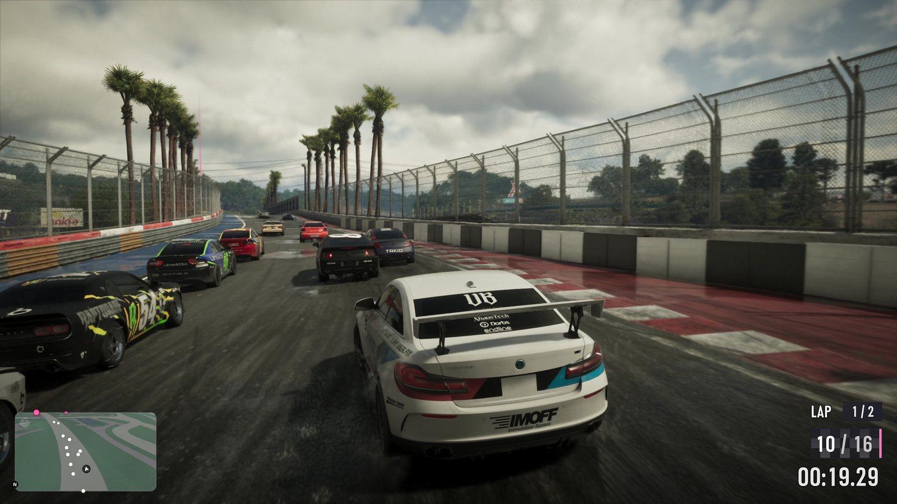
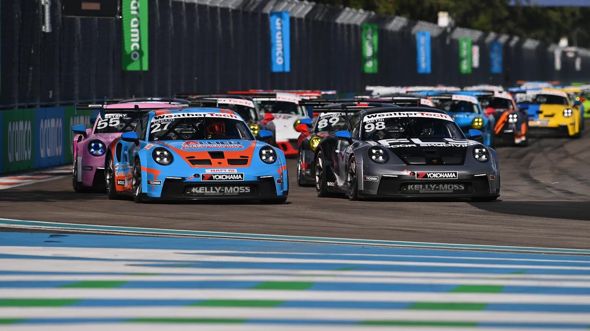
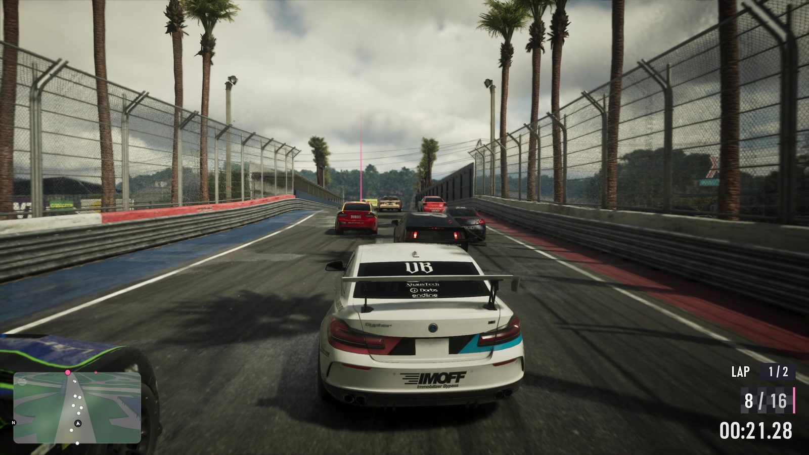

Кольцевая гонка и трасса Гран-при Майами
Опубликовано:
Бетонные отбойники, сетка-уловитель, красно-белые поребрики и пальмы вдоль прямой — так выглядит временная трасса Гран-при Майами. Но Rockstar прототип не называла, а схема трассы в игре своя: это наша трактовка.


- В «Расширенном показе» (17:42) игрок едет кольцевую гонку: на экране «круг 1/2» и позиция 10 из 16.
- Трасса огорожена бетонными блоками и сеткой, на поворотах — красно-белые поребрики, вдоль прямой стоят пальмы.
- В Майами с 2022 года проходит Гран-при «Формулы-1» на временной трассе Miami International Autodrome у стадиона Hard Rock.
- Rockstar не говорила, что гонка в игре повторяет эту трассу: сходство в типе трассы, а не в схеме.
Что в игре
Кадр из «Расширенного показа»: белый спорткар с номером на крыше несётся по трассе в плотной группе. Слева и справа — серые бетонные блоки, над ними высокая сетка. На выходе из поворота — красно-белые поребрики, вдоль прямой ровным рядом стоят пальмы. В углу экрана — интерфейс гонки: «круг 1/2», позиция 10 из 16 и секундомер.
Это одно из занятий, которые Rockstar показала в нарезке «чем заняться в Леониде»: гонка по закрытой кольцевой трассе, а не по городским улицам.

Что в реальности
Miami International Autodrome — трасса Гран-при Майами «Формулы-1». Она стоит в Майами-Гарденс, на территории и парковках стадиона Hard Rock. Первый Гран-при здесь прошёл в мае 2022 года.
Длина круга — 5,412 км, поворотов — 19. Трасса временная: её собирают из бетонных блоков и сетки перед гоночным уик-эндом и разбирают после, а стадион возвращается к обычной жизни. Кроме «Формулы-1», здесь гоняются серии поддержки — например, кубок Porsche.
Рекорд круга в гонке на трассе Майами — 1:29,708. Его поставил Макс Ферстаппен в 2023 году. Круг проложен по территории и парковкам стадиона, поэтому трасса только выглядит уличной: городских улиц на ней нет.
Совпадает и отличается
| Майами | GTA 6 | |
|---|---|---|
| Бетонные отбойники и сетка | Да | 🟢 Да |
| Пальмы вдоль трассы | Да | 🟢 Да |
| Красно-белые поребрики | Да | 🟢 Да |
| Схема трассы | 5,412 км, 19 поворотов | 🟡 Своя |
| Название | Miami International Autodrome | Не показано |
Источники: Rockstar Games — «Grand Theft Auto VI: An Extended Look», 17:42–17:44; Википедия — Miami International Autodrome; Formula 1 — Miami Grand Prix.
Реальные фото: Фото: USACJack, CC BY-SA 4.0 · Wikimedia Commons. Кадры игры: Rockstar Games.
Каждый день — одно сравнение: кадр игры рядом с реальным фото. Подписывайтесь:
YouTubeInstagramTikTok
 vs
vs
 vs
vs